从零开始的客制化87键机械键盘_2_硬件设计
从这个项目立项以来已经快一个月了，终于在师傅和同学的帮助下，搞定了硬件设计。下面我就器件选型简单介绍一下，最后贴了一下渲染图。
硬件设计
这一章介绍一下客制化键盘的硬件设计，包括以下4项：主控芯片、传输接口、轴体选择、键盘布局。
主控芯片
在确定STM32作为主控芯片之前，我在网上搜了一下，也拆了手上的ikbc C87，ATMEL的ATMEGA32芯片使用的比较多。我最终还是选择了STM32，主要原因是对STM32比较熟悉。
当然，作为32位的MCU，STM32不管是在IO数量、USB接口支持，还是程序运算速度，都能满足机械键盘的需求。
- USB接口
机械键盘使用时是作为USB Slave使用的，所以只需要芯片支持USB就行，不需要OTG。STM32F1的所有芯片都支持全速USB 2.0，所以随便选一款就行。
- IO数量
简单计算一下机械键盘需要的IO口，见下表（实际IO分配以实际原理图为准）。
| 序号 | 用途 | 数量 | 备注 |
|---|---|---|---|
| 1 | 键盘列 | 17 | 87键键盘布局，最多的一行（第2行）共17个按键 |
| 2 | 键盘行 | 6 | 87键键盘布局，共6行 |
| 3 | USB接口 | 2 | USBDN和USBDP |
| 4 | 调试接口 | 2 | 使用STLink连接，仅需JTMS-SWDIO、JTCK-SWCLK和GND三个接口 |
简单计算一下，键盘需求的IO口为27个。
- 运算速度
STM32有四个时钟源：
| 时钟源 | 备注 |
|---|---|
| 高速外部时钟(HSE) | 可取4-16MHz，一般采用8MHz |
| 高速内部时钟(HSI) | 8MHz，内部RC振荡器产生，不稳定 |
| 低速外部时钟(LSE) | 外部晶振，一般采用32.768KHz |
| 低速内部时钟(LSI) | 内部RC振荡器产生，约40KHz |
机械键盘用8MHz外部晶振，内部的系统时钟最高为72MHz，满足机械键盘的输入精度要求。
传输接口
机械键盘的传输接口已经确定为USB。一般来说，USB有以下几种接口类型：
| Type A | Type B | Mini | Micro | Type C |
|---|---|---|---|---|
| 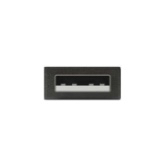 | 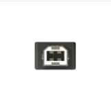 | 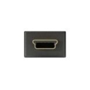 | 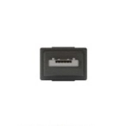 | 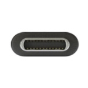 |
目前现在市面上键线分离的机械键盘一般用的是miniUSB或microUSB接口。最近半年来，USB C-type特别流行。这个接口不仅提供大功率传输，而且支持正反随便插，大大降低了插第二次的郁闷。机械键盘就决定用USB C-type。
轴体选择
在选择机械键盘的轴体时，因为正在使用的ikbc C87，所以直接就决定用樱桃的MX轴。常用的MX轴有黑青茶红四种，茶轴肯定是我的首选，不管用做什么，都可以满足要求。
MX轴的封装尺寸：PDF
键盘布局
键盘布局选择和手头使用的ikbc c87一样的87键布局，在这里可以将需要的布局信息生成一堆文本，将文本复制到这里，生成定位板文件，方面在PCB中定位每个键轴的位置。
布线图 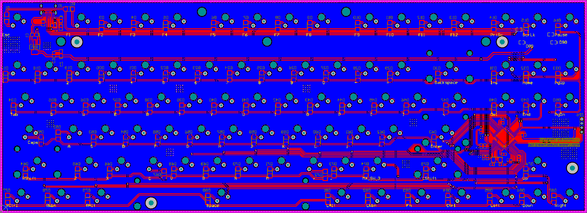
| 3D顶部视图 | |
|---|---|
| 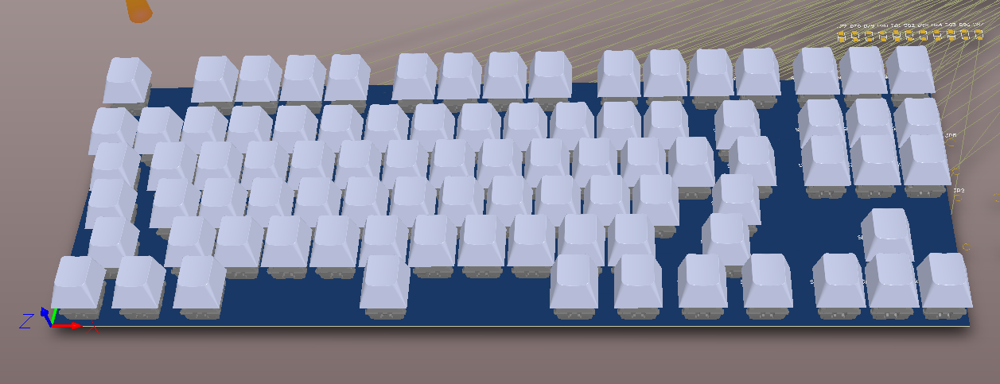 | 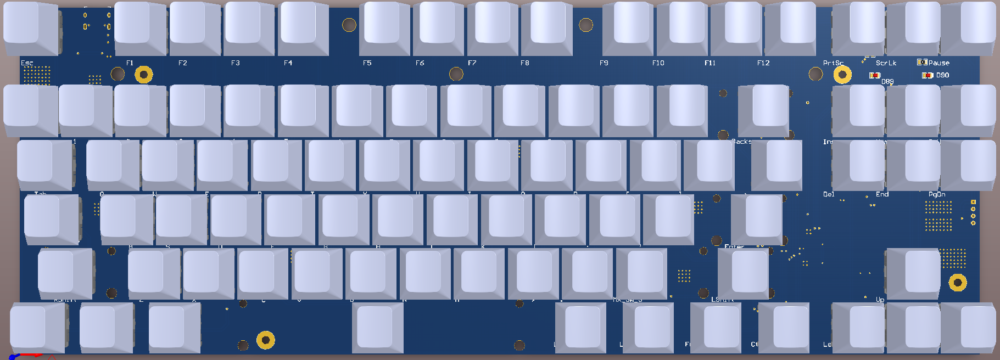 |
| 3D底部视图 | |
|---|---|
| 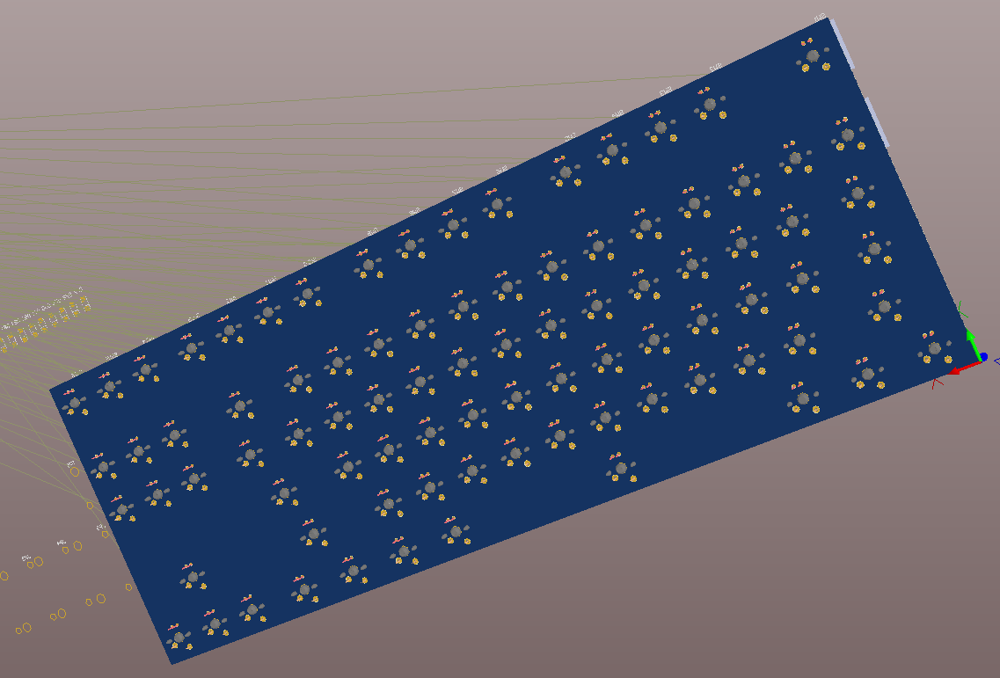 | 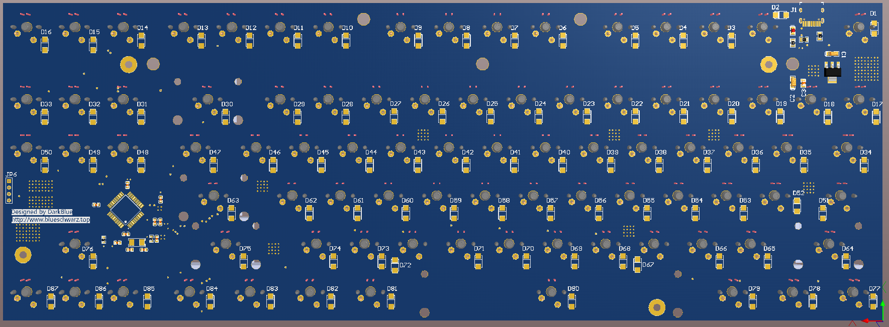 |
LOGO视图 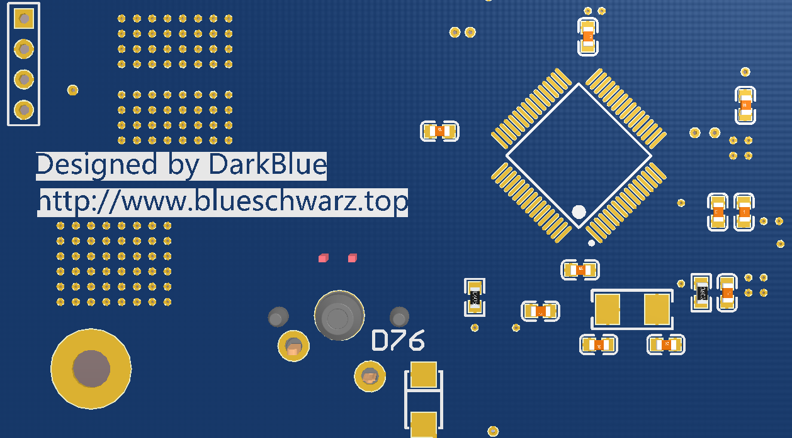
P.S. PCB文件已上传github，过一会儿就投板给嘉立创打样。